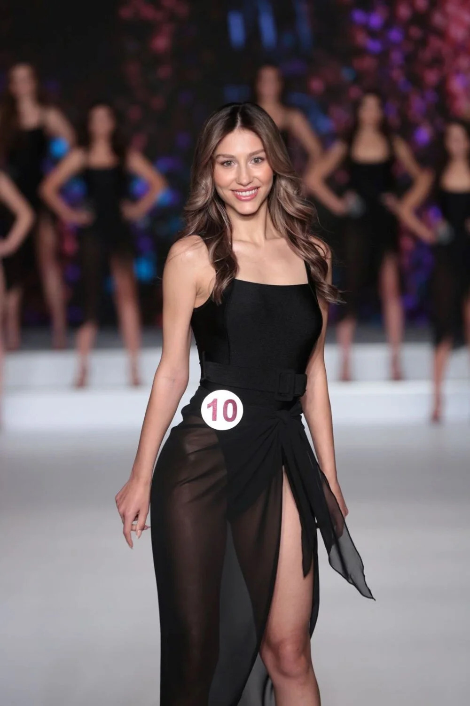
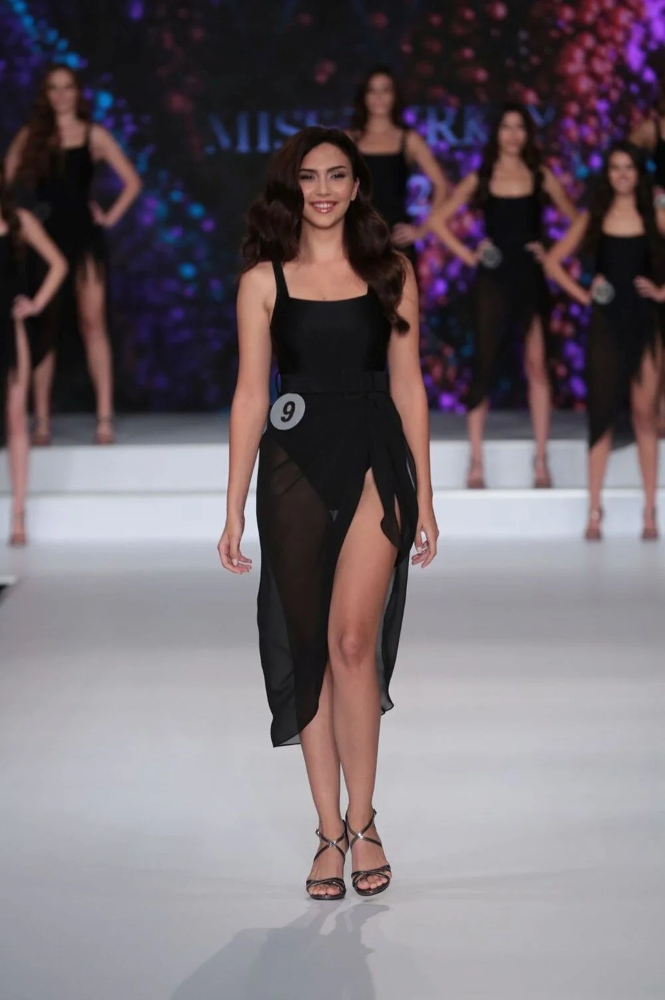
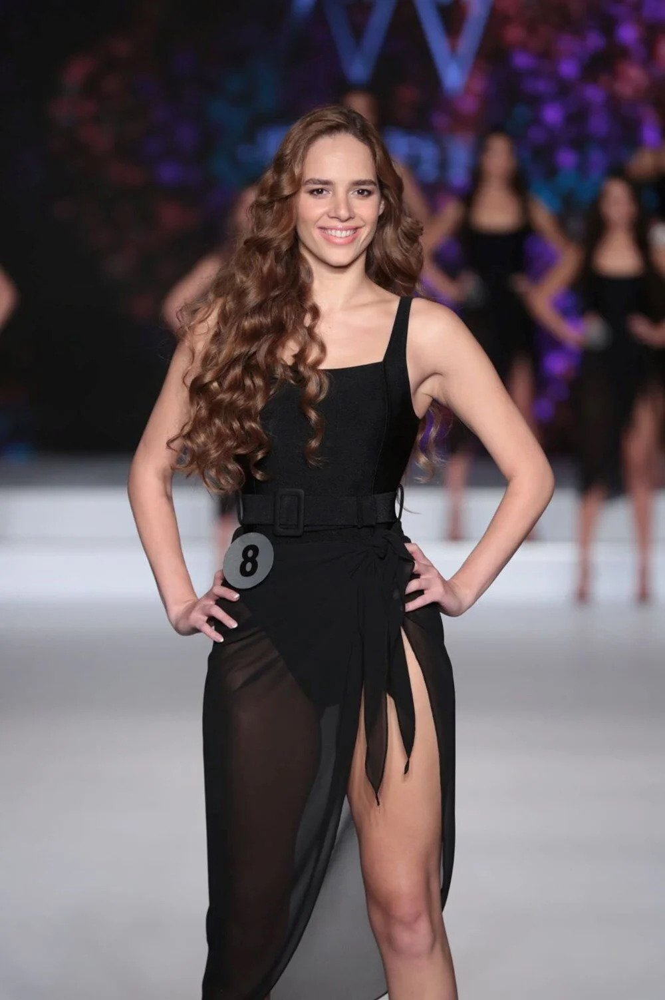
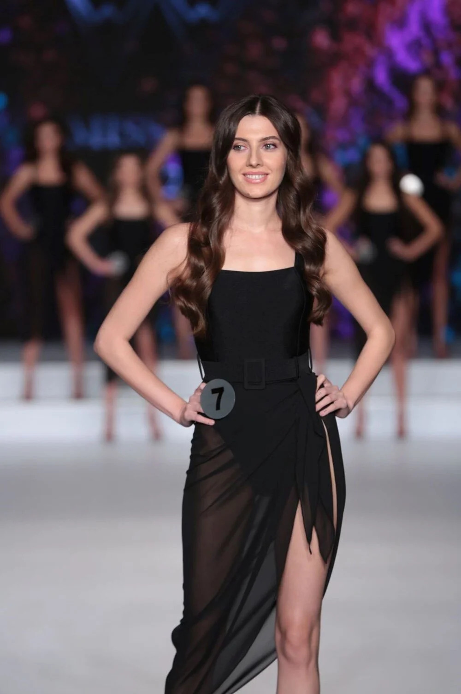
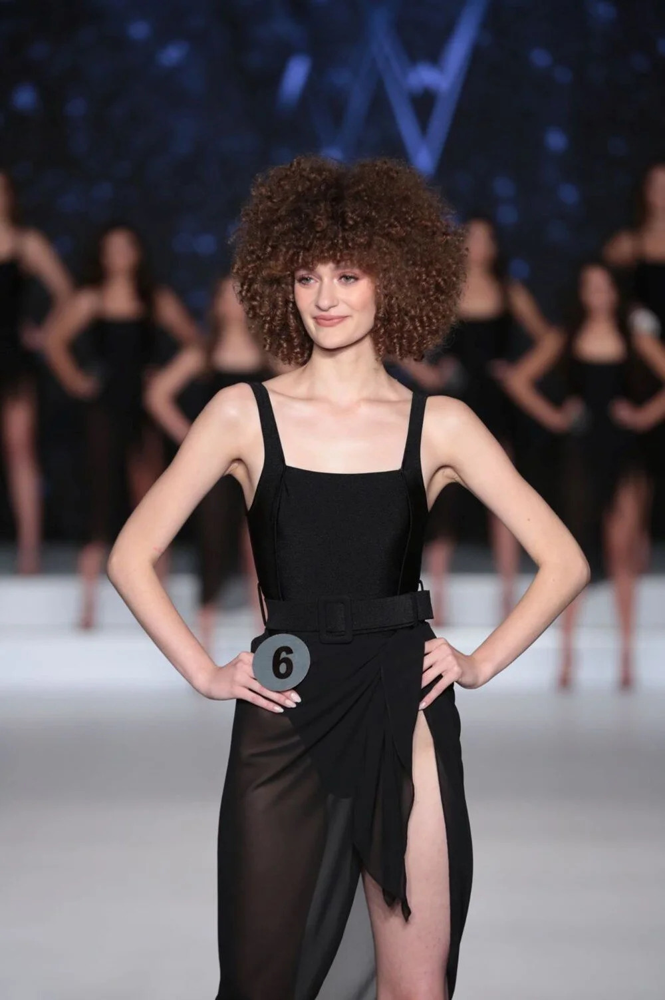
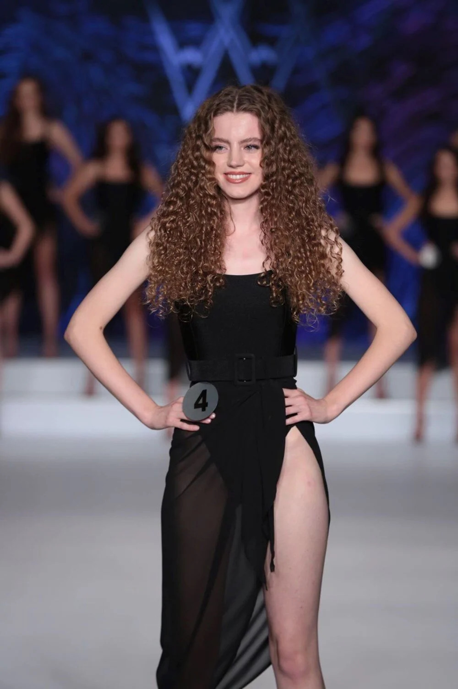
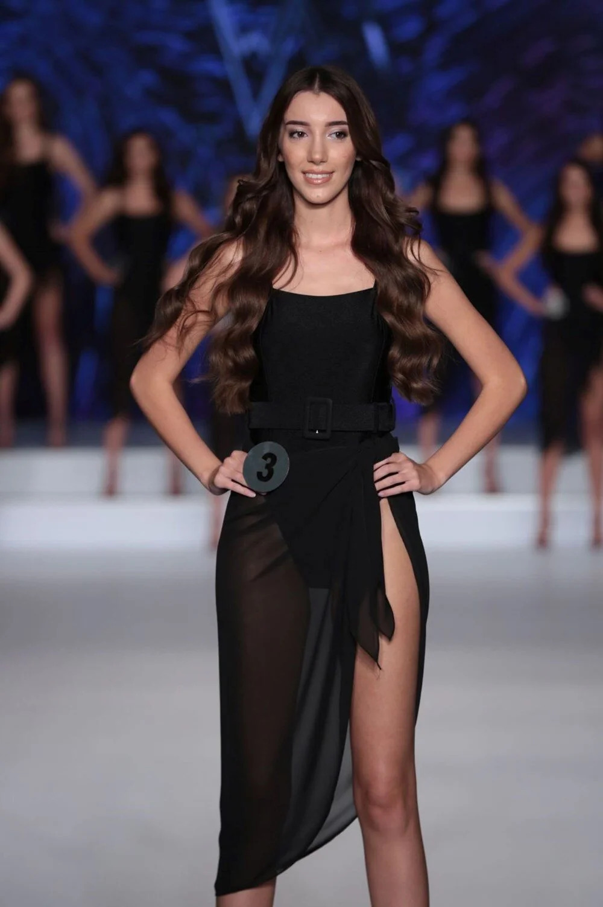
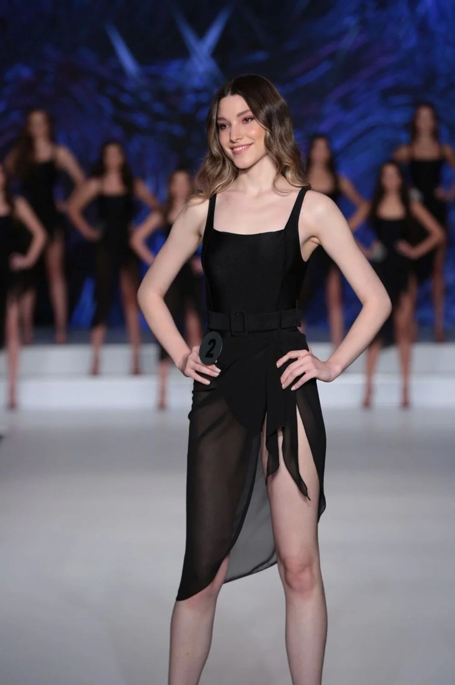
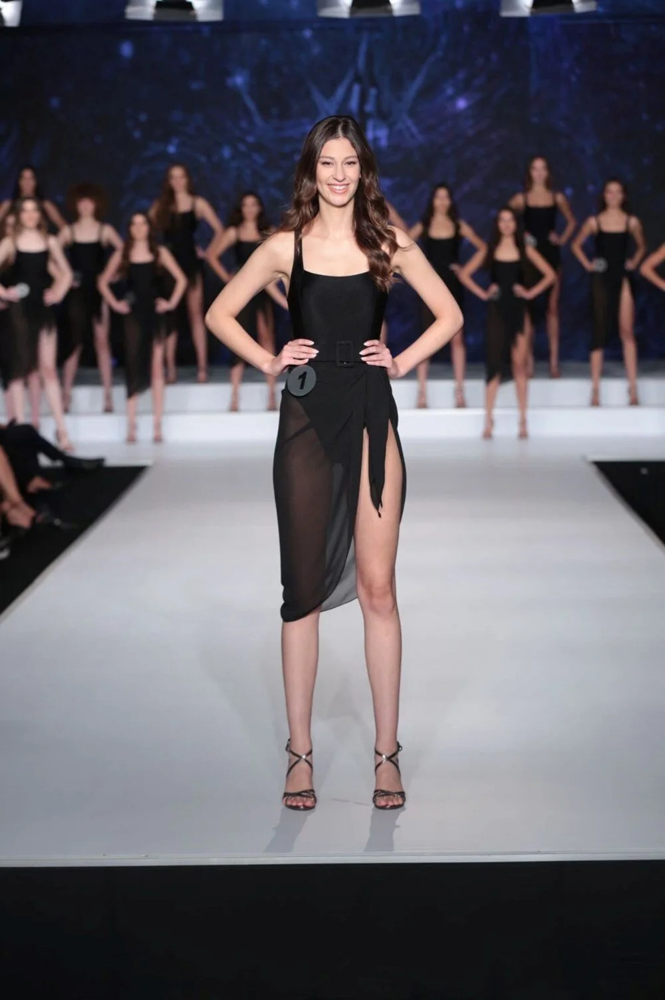

Giriş
Miss Turkey 2022 güzellik yarışmasının birincisi belli oldu. Miss Turkey güzellik yarışmasını Nursena Say kazandı ve Türkiye güzeli unvanını aldı.
G
eçen yıl olduğu gibi bu sene de Berfu Yenenler'in sunuculuğunu üstlendiği gecede 20 finalist Türkiye'nin en güzel kızı olmak için yarıştı. Artık ilk 10 numarayı size sıralayalım.
Jüri koltuğunda Demet Şener ve Pınar Altuğ gibi Türkiye eski güzellerinin de oturduğu Miss Turkey 2022 gerçekleşti.

10 NUMARA
10 NUMARA
SELVER MİRA ATAGÜL
BOY: 1.72
YAŞ: 23
MARMARA ÜNİVERSİTESİ TEKSTİL MÜHENDİSLİĞİ BÖLÜMÜ 3.SINIF ÖĞRENCİSİ

9 NUMARA
9 NUMARA
İPEK ARSU
BOY: 1.73
YAŞ: 20
AKDENİZ ÜNİVERSİTESİ BÜRO YÖNETİMİ VE YÖNETİCİ ASİSTANLIĞI MEZUNU

8 NUMARA
8 NUMARA
SELİN ERBERK GURDİKYAN
BOY: 1.78
YAŞ: 23
FLORIDA ULUSLARARASI ÜNİVERSİTESİ TIP FAKÜLTESİ SON SINIF ÖĞRENCİSİ

7 NUMARA
7 NUMARA
İLAYDA ÜSTÜN
BOY: 1.78
YAŞ: 23
KADİR HAS ÜNİVERSİTESİ REKLAMCILIK BÖLÜMÜ 4.SINIF ÖĞRENCİSİ

6 NUMARA
6 NUMARA
İREM SU KAHRAMANTÜRK
BOY: 1.79
YAŞ: 20
SAMSUN ÖZEL TEKEV ANADOLU LİSESİ MEZUNU

5 NUMARA
ALEYNA ŞİRİN
BOY: 1.76
YAŞ: 21
ÖZYEĞİN ÜNİVERSİTESİ İÇ MİMARLIK VE ÇEVRE TASARIMI BÖLÜMÜ 2. SINIF ÖĞRENCİSİ

4 NUMARA
4 NUMARA
ESİL KAYA
BOY: 1.77
YAŞ: 19
BEYKENT ÜNİVERSİTESİ TEKSTİL VE MODA TASARIMI BÖLÜMÜ 2.SINIF ÖĞRENCİSİ

3 NUMARA
3 NUMARA
DERYA ÇETİNKAYA
BOY: 1.77
YAŞ: 22
VRİJE UNİVERSİTEİT BRUSSEL HUKUK 1. SINIF ÖĞRENCİSİ

2 NUMARA
2 NUMARA
GİZEM KOŞAR
BOY: 1.81
YAŞ: 18
BAHÇEŞEHİR ÜNİVERSİTESİ DİŞ HEKİMLİĞİ 1. SINIF ÖĞRENCİSİ

1 NUMARA